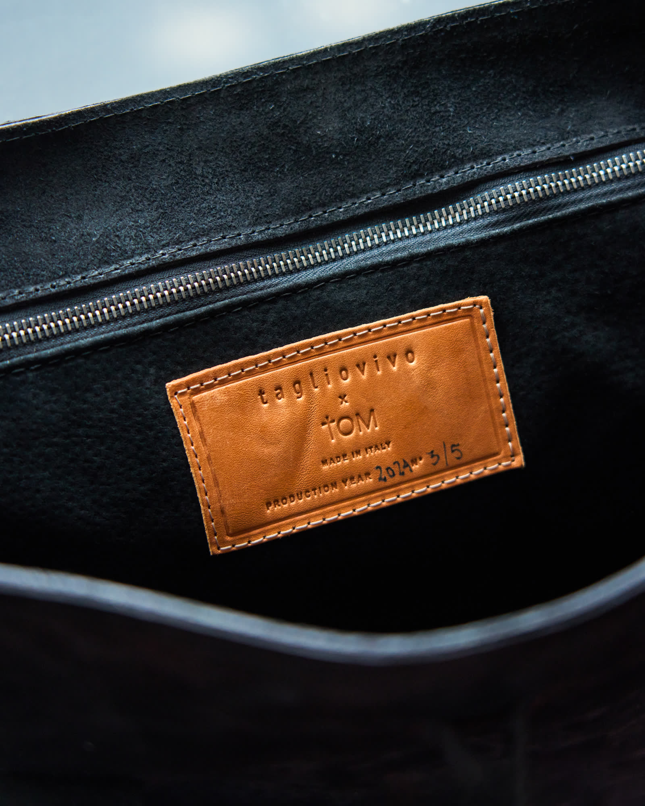
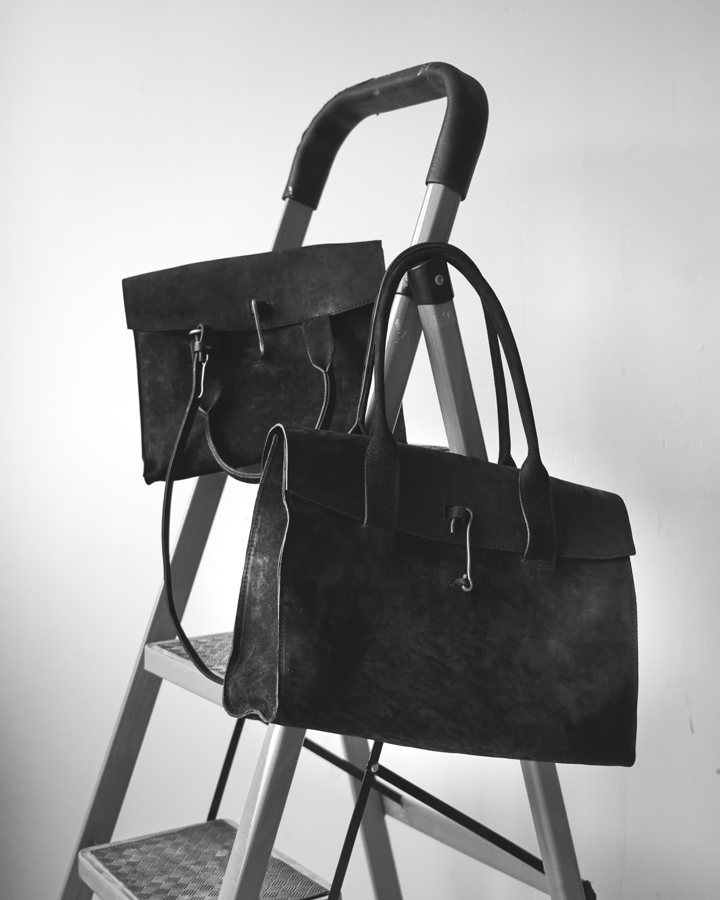
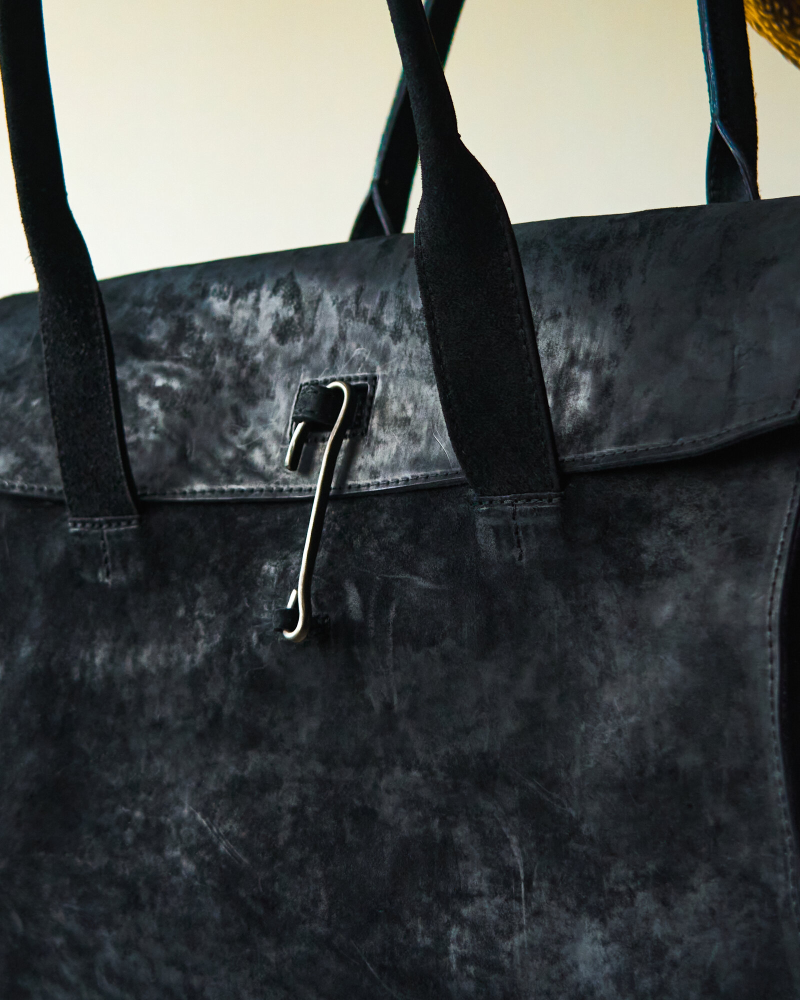

| 소재 | 이탤리언 레더 |
|---|---|
| 원산지 | Made in Italy |
| 에디션 | 2024 · No. 3/5 |
| 제작 | tagliovivo × tOM 협업 |
| 가로 | 38 cm |
|---|---|
| 높이 | 30 cm |
| 폭 | 14 cm |
| 핸들 | 40 cm |
한 점뿐이라 교환은 어렵습니다. 궁금한 점은 문의해 주십시오.
실측은 사람이 직접 재며 1~2cm 오차가 있을 수 있습니다.



구조 확인용 자리입니다. 사진은 매장 사진을 임시로 놓은 것이며 실제 상품 촬영본이 아닙니다. 상품명은 비어 있고, 가격·소재·원산지·실측·케어·배송·포장 문구는 형식을 보여주기 위한 예시이며 실제 상품 정보나 확정된 정책이 아닙니다.
02-3143-2616
12:00 — 21:00 · 연중무휴
결제 후 1–2일 내 발송
반품 정책은 확정 후 게시
tOM의 포장으로 보내드립니다
(문구 예시)